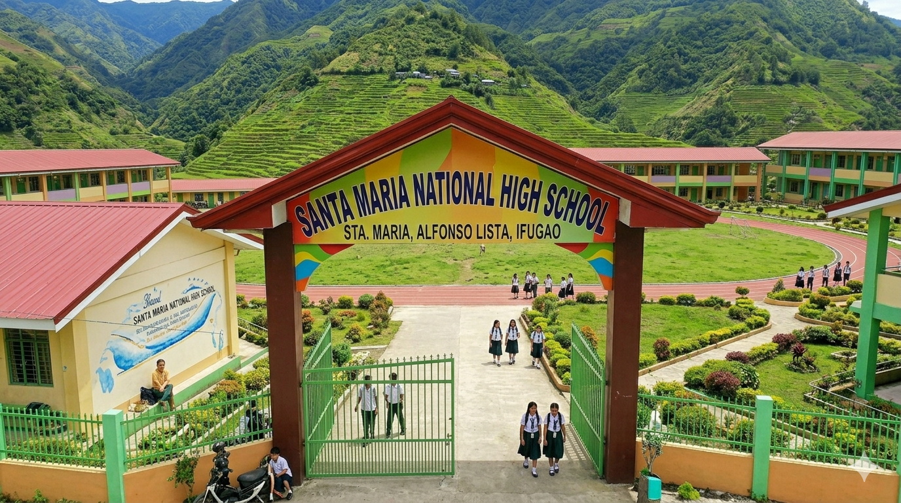

My High School
Sta. Maria National High School

Mission & Vision
- Mission:
To protect and promote the right of every Filipino to quality, equitable, culture-based, and complete basic education where:
Students learn in a child-friendly, gender-sensitive, safe, and motivating environment.
Teachers facilitate learning and constantly nurture every learner.
Administrators and staff, as stewards of the institution, ensure an enabling and supportive environment for effective learning to happen.
Family, community, and other stakeholders are actively engaged and share responsibility for developing life-long learners.
- Vision:
We dream of Filipinos who passionately love their country and whose values and competencies enable them to realize their full potential and contribute meaningfully to building the nation.
As a learner-centered public institution, the Department of Education continuously improves itself to better serve its stakeholders.
Awards & Achievements
Athlete of the Year
2020
Street Dance Champion
2019
Loyalty Award
2020
School Hymn
Verse 1:
In Santa Maria we stand with pride,
With dreams and hopes as our guide,
A home of learning, strong and bright,
We seek the truth, we choose what’s right.
Verse 2:
With minds empowered, hearts so true,
We face each challenge and see it through,
With unity and faith we grow,
To serve the world where’er we go.
Chorus:
Santa Maria High, we sing for you,
Our alma mater, firm and true,
With strength and courage, hand in hand,
We build the future of our land.
With wisdom, hope, and loyalty,
We strive for excellence constantly,
Santa Maria High, we’ll always be,
Forever proud, our loyalty.